Digitale strategie / Website ontwikkeling / Optimalisatie zoekresultaten / Sociale media / Analyse
We hebben een klein vermoeden waarom u onze website bezoekt. U bent een expert in uw eigen vakgebied en u wilt uw zaak online aanwezig hebben, maar u heeft te weinig tijd of interesse om dat eventjes te regelen.
Geen probleem! Wij brengen uw zaak online en we zorgen ervoor dat u zich op uw expertise kan blijven focussen. Hieronder geven we een overzicht van de digitale diensten die we voor u kunnen verzorgen.

Wij zijn er niet op uit om te verkopen wat u niet nodig heeft. Als start van een project denken wij graag samen met u na over welke de ideale digitale strategie is voor u.
Welke doelstellingen zijn voor u belangrijk en hoe kunnen we daarvoor de beste oplossingen bedenken?
Op deze vragen komen we samen tot een antwoord.

Voor het bouwen of verbeteren van uw website helpen wij u vanaf de start met de visuele vormgeving, de eigenlijke technische programmatie, maar ook de ontwikkeling van tools zodat u in de toekomst gemakkelijk uw website zelf kan beheren en onderhouden.
Bij de opbouw van een website kan u gerust zelf ideeën aanreiken, of omgekeerd starten wij met een voorstel. Zoals gezegd, we maken het op uw maat.

U vindt het waarschijnlijk ook belangrijk dat uw klanten uw zaak gemakkelijk online terugvinden. Ook hierin bezitten we de nodige expertise.
We onderzoeken welke zoektermen in uw branche belangrijk zijn en zorgen voor een geoptimaliseerde inhoud, en we installeren de nodige tools om de resultaten over de tijd heen te kunnen evalueren

Consumenten zoeken vaker en vaker ook bedrijven via sociale media. Daarom is het belangrijk om ook via deze kanalen aanwezig te zijn voor uw klanten.
Wij adviseren u graag over de ideale mix van kanalen en hoe u die best inzet. Het regelmatig posten en onderhouden van de kanalen laten we uiteraard aan u over.
Wij vinden het heel belangrijk om ook de prestaties van uw website onder de loep te houden.
Over tijd kunnen we bijhouden hoeveel mensen uw website bezoeken, wat ze doen op uw website en of ze een bepaalde actie ondernemen. Uit de cijfers leren we dan ook of er mogelijke verbeteringen zijn aan te brengen.